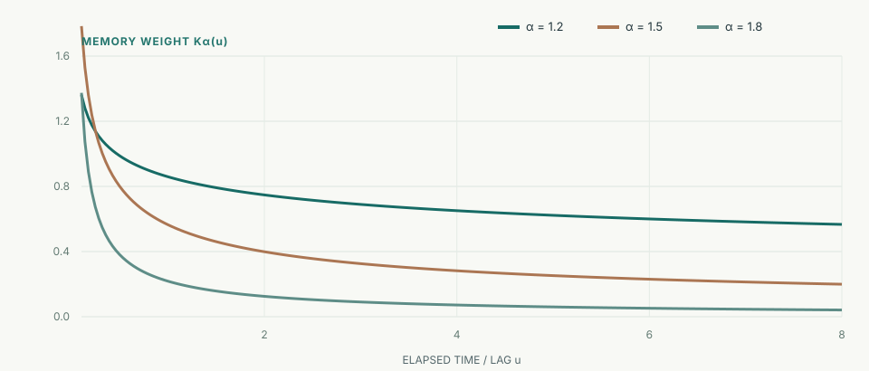

I work with mathematical models, numerical methods and financial data. My recent work includes industrial flow modelling, a thesis on fractional differential equations, and empirical tests of asset-pricing models.
During a six-month project, I adapted published models to industrial operating conditions, studied uncertainty with Monte Carlo simulations and compared predictions with measurements.
Our group compared CAPM and Fama–French models using industry portfolio returns. We examined model fit, pricing errors, robust inference and moment conditions.
I'm currently exploring how reliable backtests are when many strategies are tested on the same data, and how to distinguish overfitting from genuine predictive ability. I'm also working on Fama–French factor extensions, studying value, residual momentum and low-volatility signals. I collect the related papers and project notes on the Exploring & Reading page.
Mathematical modelling / Empirical analysis
Projects
Research problems, modelling choices and the questions they led me to explore.
Industrial research · Six-month project
Two-phase flow in industrial pipelines
In food production, liquid product can remain inside pipelines after a production run. During a six-month industrial research project, I explored how compressed air and water can recover this product through four stages: Push, Blow, Rinse and Dry.
I adapted published flow models to the pipeline conditions, implemented numerical simulations in Python and compared calculations with available measurements. The research raised a broader question: how can a model remain useful when the flow regime changes, input parameters are uncertain and measurements are limited?
The process in practice
PushBlowRinseDry
01 / MODELLING WALKTHROUGH
Modelling stages
Four stages of product recovery and the mathematical ideas used to describe them.
01 / 04
01
MOVING-COLUMN DYNAMICS
Displacing the liquid column
Before Push, air in the pipeline is pressurised using an air tank. When the valve opens, the compressed air expands and pushes the liquid product towards the outlet.
As the liquid column becomes shorter, the gas occupies more space and the pressure changes. I wanted to understand how this pressure drop affects discharge, and how much product can remain behind.
Key question: How does expanding air affect the speed of the liquid and the amount left in the pipe?
MODEL
I started from the one-dimensional filling and emptying models developed by Tijsseling et al. (2016). Their work connects driving pressure, friction, local resistance and liquid holdup with the movement of a liquid column. I adapted these ideas to investigate how expanding air affects discharge and the moving air–liquid interface under different pressure assumptions.
The interface speed depends on outlet flow Q, pipe area A and the assumed fraction β of liquid left behind.
ASSUMPTIONS & LIMITS
The public example compares fixed pressure with expansion of trapped air; it does not simulate additional air flowing from the tank.
02
VOLUME CONSERVATION
From liquid column to wall film
After Push, a smaller liquid column and some residual product may still be inside the pipe. The compressor now supplies air to move this product towards the outlet.
As the full column disappears, the remaining liquid can form a film along the pipe wall. This changes the relevant flow physics, so the column and film cannot be described by exactly the same model.
Key question: How much product is discharged, and how much remains in the pipe?
MODEL
I treated Blow as two regimes: a shrinking liquid column followed by gas–liquid film flow. I used Hart et al. (1989) to examine how small liquid holdup influences pressure losses, then studied Cioncolini and Thome (2012) on void fraction and their 2013 study on uneven liquid-film distributions in horizontal pipes.
These references informed the later film-flow description. The public Python example checks the volume balance through the transition rather than predicting industrial film removal.
The remaining column length L decreases with velocity U; α represents the assumed partition between discharge and liquid left behind.
ASSUMPTIONS & LIMITS
The public reconstruction demonstrates the transition and volume balance, not a validated annular-flow or industrial film-removal prediction.
03
MULTI-INVENTORY BALANCES
Tracking water and remaining product
Once most product has been removed, rinse water is added while the compressor continues supplying air. The water helps dilute and carry away residue that airflow alone may leave behind.
Some water and product leave the pipe, while some remain inside it. To understand this stage, these quantities must be tracked separately rather than treated as a single liquid volume.
Key question: How much water and product enter, leave and remain in the pipeline?
MODEL
I used separate water and product balances. The public example also distinguishes product still on the wall from product being carried through the pipe, making it possible to check that the different inventories remain consistent.
The water remaining in the pipe rises with water inflow and falls as water is discharged.
ASSUMPTIONS & LIMITS
Product detachment and mixing in the public example use assumed rates; cleaning effectiveness and two-phase transport are not experimentally validated.
04
STATE TRANSFER
Removing the remaining rinse water
Water injection stops after Rinse, but the pipeline may still contain water on its walls or in low sections. The compressor continues moving air through the pipe to remove what remains.
Dry should begin with the water actually left at the end of Rinse, not the total amount previously injected.
Key question: How does the remaining water change with time, and when might the drying target be reached?
MODEL
I carried the final Rinse water inventory into a separate Dry calculation. In the public example, a simple first-order removal law shows how the initial amount and an assumed removal rate affect the remaining water.
The water remaining at time t follows an illustrative exponential decline from the amount present after Rinse.
ASSUMPTIONS & LIMITS
The removal coefficient and stopping criterion are illustrative, not calibrated to industrial drying tests.
02 / NUMERICAL FIGURES
Numerical figures
Five reproducible Python examples, using synthetic inputs and clearly stated assumptions.
Python-generated illustration · synthetic inputs · Select plot to enlarge
PUSH / PRESSURE · 01 / 05
How air expansion changes discharge
I compared two pressure assumptions for the same hypothetical pipeline: a fixed upstream pressure and a trapped volume of compressed air that expands as product leaves.
READ THE FIGURE
Time (s) runs horizontally; product discharge (L/s) runs vertically. In this example, the fixed-pressure case maintains a higher flow than the expanding-air case.
KEY POINT
The pressure-source assumption changes the predicted discharge, even when the pipeline is unchanged.
SCOPE
One-dimensional synthetic Push calculation; not a validated prediction for an industrial installation.
Python-generated illustration · synthetic inputs · Select plot to enlarge
GEOMETRY / RESISTANCE · 02 / 05
Same volume, different pressure losses
I compared a segmented pipeline with a single volume-equivalent pipe. Both contain the same total volume, but their diameter changes and local resistances are different.
READ THE FIGURE
Flow rate (L/s) is horizontal; calculated friction and local pressure losses (kPa) are vertical. The segmented pipe has higher losses at the same flow in this example.
KEY POINT
Matching the total pipe volume does not make two pipelines hydraulically equivalent.
SCOPE
A steady single-phase illustration, not a pressure-loss model dynamically coupled to Push.
Python-generated illustration · synthetic inputs · Select plot to enlarge
BLOW / CONSERVATION · 03 / 05
Accounting for the remaining product
As the liquid column shrinks, some product is discharged and some is left behind. I tracked all three volumes to check where the original product goes.
READ THE FIGURE
Time (s) is horizontal; each curve is a fraction of the initial liquid volume. The full column, discharged volume and residual liquid add up to 100% throughout the example.
KEY POINT
Checking volume conservation helps verify the numerical implementation, but does not by itself validate the flow physics.
SCOPE
The volume partition is illustrative; liquid-film removal has not been independently validated.
Python-generated illustration · synthetic inputs · Select plot to enlarge
UNCERTAINTY / QMC · 04 / 05
Discharge under uncertain inputs
I ran the Push example with 256 hypothetical combinations of initial pressure, friction, outlet resistance and liquid holdup, sampled using a scrambled Sobol sequence.
READ THE FIGURE
The horizontal axis is progress toward the 50% product-removal target, not time. The vertical axis is outlet flow (L/s); the line is the sample median and the band covers the 10th–90th sample percentiles.
KEY POINT
Uncertainty in the chosen input parameters produces a range of simulated flow trajectories.
SCOPE
The shaded range is a conditional sample envelope, not a validated prediction or experimental confidence interval.
Python-generated illustration · synthetic inputs · Select plot to enlarge
RINSE + DRY / INTEGRATION · 05 / 05
Linking Rinse to Dry
I used the water remaining at the end of the simplified Rinse calculation as the initial water volume for Dry, rather than starting the next stage from an empty pipe.
READ THE FIGURE
Time since the start of Rinse (s) is horizontal; water remaining (L) is vertical. It rises during the rinse and falls after the marked handoff under an assumed removal rate.
KEY POINT
Passing the remaining water forward keeps the two numerical stages consistent with the same water balance.
SCOPE
Synthetic water accounting only; the example does not establish cleaning effectiveness or industrial drying performance.
Five plots reproduced from Python, without company measurements
Model evaluation
During the original industrial research project, I compared model calculations with available measurements and investigated discrepancies. I also examined the experimental dataset published by Chen et al. (2024), which documents pressure behaviour and air–water interface movement during pipeline filling and emptying. It provides useful experimental context for evaluating moving-column models.
What I learned
What started as a calculation of pressure losses grew into a much broader modelling problem. I investigated how compressed air moves a liquid column, why product remains inside the pipe, and how liquid and rinse water can be tracked through the later stages. This brought together conservation laws, differential equations, published research and numerical simulations.
The main lesson was that solving the equations is only part of building a useful model. The assumptions, uncertain inputs and comparison with measurements matter just as much. During the original project, I compared calculations with available measurements and investigated sensitivity to uncertain parameters. The figures above are simplified public reconstructions, not the original company simulations or validated predictions for an installation.
In a five-person MSc study, we compared CAPM with the model of Fama and French (2015) using historical U.S. industry portfolios. We also investigated momentum motivated by Carhart (1997), return seasonality and restrictions on a stochastic discount factor.
The central question became whether a model that explains more variation in past returns also prices those returns correctly. This distinction led us to compare factor regressions with formal specification tests.
Figure 01 · Adjusted R², July 1963–June 2026. FF5 improves explanatory fit for every industry, but fit and pricing are different measures.
Model fit and pricing errors
The five-factor model improved adjusted R² across all five industries, but it did not eliminate pricing errors. Textiles and Toys retained statistically significant alphas after correction for multiple tests.
To assess inference in financial return series, we used heteroskedasticity and autocorrelation consistent standard errors following Newey and West (1987). We also evaluated stochastic discount factor restrictions using GMM specification tests based on Hansen (1982). These methods helped us distinguish explanatory fit from evidence about pricing restrictions.
A separate public Python reconstruction includes robustness checks. In a lagged-factor walk-forward diagnostic, four of five industries underperformed a historical-mean forecast. This diagnostic is not a point-in-time trading backtest.
Classical differential equations use integer-order derivatives. Fractional calculus extends differentiation to noninteger orders, allowing dynamical models to incorporate memory. My thesis examined how this affects oscillations, decay and phase-space behaviour.
Research question
How can fractional differential equations model the fractional harmonic oscillator, and what are the implications for accuracy, stability and physical interpretation?
From classical motion to fractional memory
In the simple oscillator, the ordinary second derivative is replaced by the Caputo derivative of order α. For 1 < α ≤ 2, the model retains familiar initial conditions for displacement and velocity.
At α = 2, the classical harmonic oscillator is recovered. For noninteger orders, the derivative depends on previous values of the system, changing its response even without a separate damping term.
Figure 01 — Displacement over time. Calculated solutions for four fractional orders. The classical case remains periodic; the fractional cases display order-dependent decay.
The Mittag-Leffler connection
The thesis uses Laplace transforms and Mittag-Leffler functions to construct exact solutions in tractable linear cases. For the illustrated initial conditions, the solution is:
x(t) = Eα,1(−ω2tα)For arbitrary initial values, a second term involving t Eα,2 is needed.
When α = 2, this expression becomes cos(ωt). Analytical solutions offer a benchmark for testing numerical approximations and interpreting the nonclassical dynamics.
Figure 02 — Position–velocity projections. Classical motion follows a closed orbit; the illustrated fractional solutions approach equilibrium. Because the system has memory, this projection is not a complete state-space description.
Why earlier motion still matters
For 1 < α < 2, the Caputo derivative integrates past acceleration with a power-law kernel. Its dependence on the entire earlier interval is the mathematical reason these models are described as nonlocal.

Figure 03 — The memory kernel. Kα(u) = u1−α/Γ(2−α), with lag u > 0. This is a kernel illustration, not measured data or an oscillator trajectory.
From proof techniques to simulations
Analytical methods
Laplace transforms, Mittag-Leffler functions and fractional power series for solution construction and limiting-case analysis.
Numerical methods
L1 and L2 weighted-difference schemes for approximating Caputo derivatives; comparisons of simulated trajectories.
Oscillator models
Simple, nonlinear, damped and periodically driven fractional oscillators, including changes in the derivative orders.
Further directions
The thesis outlines potential fractional extensions of Van der Pol and Lotka–Volterra systems; these extensions were not completed in the thesis.
Mathematical modelling, special functions, Laplace transforms, numerical discretization, scientific Python, and the interpretation of computational results.
Figures on this page were newly computed from the simple fractional oscillator and Caputo kernel formulas discussed in the 2025 thesis. They are illustrative model outputs, not empirical datasets. The thesis manuscript contains some formula and caption inconsistencies; the figures use the stated Caputo initial-value problem.
Empirical finance
MSc group research on industry returns and factor-model testing.
EMPIRICAL FINANCE / MSC GROUP STUDY2026
Computed regression results · Historical industry returns · Not a trading backtest
FINANCIAL ECONOMETRICS / MODEL VALIDATION
Industry returns and factor-model testing
In an MSc group study, we compared CAPM and Fama–French factor models across five U.S. industry portfolios. The figure shows improved adjusted R² under the five-factor model; this does not imply that all pricing errors disappear.
My ongoing work focuses on reproducible Python analysis, robust inference, machine learning and the reliability of backtesting.
The figure presents historical, in-sample results from the group analysis, not a validated investment strategy.
Research questions, the papers guiding them, and the projects I am working on.
What I'm exploring now
Questions I am working through, alongside the papers I am using to understand them.
01 / QUANTITATIVE RESEARCH
How reliable is a backtest?
When many trading strategies are tested on the same historical data, a strong result can arise by chance. I am interested in distinguishing genuine predictive ability from a strategy selected because it happened to perform well in the sample.
To investigate this, I am studying the bootstrap-based reality check of White (2000), the probability of backtest overfitting examined by Bailey et al. (2014), and the Deflated Sharpe Ratio developed by Bailey and López de Prado (2014). These approaches examine different consequences of selecting strategies on historical data.
I want to understand what each method can tell us about the reliability of a selected strategy and when its assumptions are appropriate.
I am studying how supply disruptions, partial deliveries and risk preferences change supplier selection and order sizes. The research by Merzifonluoglu et al. (2026) examines these decisions under different delivery guarantees and risk preferences.
I am using this work to understand how supplier rankings and ordering decisions change under uncertainty, connecting the newsvendor model to Monte Carlo simulation, stochastic optimization and risk measures such as CVaR.
Supplier selection · Monte Carlo · CVaR · Stochastic optimization
Research & continuing work
My projects
Research questions and implementations I am developing beyond the assignments listed below.
Empirical asset pricing
In a five-person MSc study, we tested CAPM against the five-factor model of Fama and French (2015) using U.S. industry portfolios. The additional factors improved explanatory fit, but the tests still found pricing errors. That made me interested in the difference between explaining past returns and evaluating a model's restrictions.
The statistical side matters just as much: Newey and West (1987) motivates autocorrelation-robust inference, while Hansen (1982) provides the GMM framework used for stochastic discount factor tests. I am exploring these questions further through an independent Python reconstruction and robustness checks, without treating historical results as a validated trading strategy.
I want to find out whether refinements to familiar investment factors contain information that standard models miss. Starting from Fama and French (2015), I am investigating improved value measures suggested by Blitz and Hanauer, stock-specific momentum in Blitz, Huij and Martens, and low-volatility signals studied by Blitz and van Vliet. I also plan to examine size-related effects discussed in Settling the Size Matter.
I plan to reproduce the conventional factors before constructing each extension. Factor-spanning tests, pricing errors and out-of-sample comparisons should help determine whether an apparent improvement represents new information or an additional way of fitting the same historical returns.
Can a more flexible model find useful structure in stock returns that a linear factor model misses? Gu, Kelly and Xiu motivate comparing linear baselines with regularized and nonlinear methods. The studies by Cakici et al. and Drobetz and Otto make me interested in whether the relationships extend beyond the U.S. market.
I plan to build the models from simple regressions toward tree-based approaches using chronological training and test periods. Bailey et al. on backtest overfitting and the Deflated Sharpe Ratio help frame how to interpret a strong selected result. I want to evaluate not just forecast accuracy but also portfolio performance, turnover, costs and factor exposures.
University assignments in econometrics, financial modelling and optimization. The descriptions cover the methods I am studying, not completed results.
Panel-data estimation and dynamic models
Using simulated panel data to compare pooled OLS, clustered standard errors, fixed effects, first differences and random effects. For dynamic-panel bias and instrument-based estimation, I am studying the approach introduced by Arellano and Bond (1991), including the moment conditions needed for consistent estimation.
Studying arbitrage, market incompleteness and contingent-claim pricing with stochastic interest rates. The computational work focuses on fitting Vasicek and Nelson–Siegel yield curves, simulating rate paths and valuing bond options.
Studying how supplier disruptions affect ordering decisions, building on the delivery-guarantee and risk-preference questions in Merzifonluoglu et al. (2026). The assignment combines supplier-selection algorithms, Monte Carlo simulation, stochastic programming, VaR/CVaR objectives and distributionally robust optimization.
Decision Making Under Uncertainty · MSc coursework
Hedging and pricing hybrid insurance claims
Comparing period-by-period minimum-variance hedging with a strategy that rebalances when new information becomes available. The model combines stock-index-linked death benefits with expected shortfall risk margins and Euler risk allocation.
I have always been curious about how things work and why, which is what first drew me to mathematics. My interest in financial markets started at home. My father followed the stock market and sometimes talked about how developments in financial markets could affect his business. Those conversations made me curious about the relationship between financial markets and the wider economy.
After completing my BSc in Mathematics at Utrecht University, I decided to pursue an MSc in Quantitative Finance at Tilburg University, where I could combine this interest with my background in mathematics and statistics.
Education
MSc Quantitative FinanceCurrent
Tilburg University
Empirical Finance, Panel Data Econometrics, Valuation & Risk
Independent applied research for a company in the food industry.
Adapted published two-phase pipeline flow models, used numerical simulations and Monte Carlo uncertainty analysis, and compared predictions with measurements. Case study
Empirical finance analysisMSc coursework
Python analysis of industry portfolios, factor models, pricing errors and robust inference. Project details
Research Assistant2019
The Hague University of Applied Sciences
Analysed student performance data and presented research findings.
Mathematics and Physics Tutor
Secondary-school tutoring, including individual explanations and preparation of practice exercises.
How I learn
I like to begin with a question and follow it until I understand not just the answer, but why it works. I look for the assumptions behind an argument, try counterexamples, and ask what changes when those assumptions are relaxed. What I enjoy most is finding the natural successor of a problem: the next question that follows from what I have just understood, rather than a topic that feels disconnected.
Socratic dialogue is an important part of this process. I learn by questioning explanations, making connections and working through ideas for myself. I have also started using AI as a discussion partner to challenge my reasoning, suggest different perspectives and uncover questions I might otherwise miss. It helps me make this exploratory way of learning more natural, while leaving the responsibility for understanding and checking the arguments with me.
Other interests
Outside my studies, I enjoy chess, 3D printing, reading, climbing, strategy games and meditation.
Technical skills
Programming
Python, Jupyter, Git and GitHub
Modelling
Numerical simulation, Monte Carlo uncertainty propagation and model validation
Statistics & finance
Probability, stochastic processes, econometrics, regressions and factor models